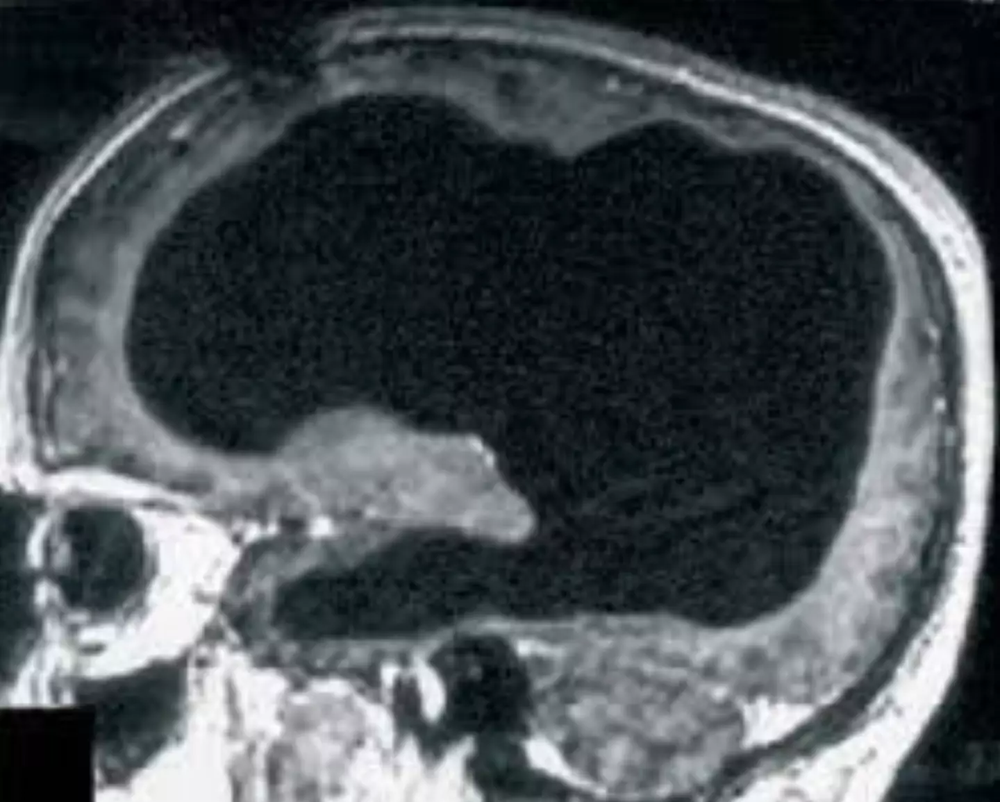

⚠️ATENÇÃO⚠️
Compromisso e Cuidado com os nossos Leitores
Nós da Papel News, temos uma missão que vai além de informar. Nós preocupamos genuinamente com o bem-estar de nossos leitores e buscamos oferecer não apenas notícias, mas também apoio e conscientização. Entendemos que cada pessoa que nos lê é parte de nossa grande família editorial.
Setembro é um mês emblemático para nós, marcado pela campanha de prevenção ao suicídio. É um período para reforçar a importância da saúde mental e do diálogo aberto sobre ansiedade e depressão. Sabemos que esses são desafios reais enfrentados por muitos e queremos estar ao seu lado, oferecendo palavras que confortam e informam.
Recomendamos que, ao sentir qualquer sintoma de ansiedade ou depressão, não hesite em buscar ajuda. Falar com alguém de confiança, seja um amigo ou familiar, pode ser o primeiro passo para encontrar suporte. Além disso, profissionais da saúde, como psicólogos, estão preparados para oferecer a assistência necessária.
Sua vida é preciosa! Queremos contribuir para que você encontre motivos para sorrir todos os dias. Por isso, nos dedicamos a criar conteúdos que informam, educam e inspiram. Estamos juntos nessa jornada, valorizando cada história e cada leitor.
Sua vida é valiosa e queremos vê-lo sorrir! 😁
Estamos aqui não apenas para trazer informações, mas para lembrar que você não está sozinho. 🙃
Tecnologia👨💻
O Chipset Open-Source da Escola Politécnica para a Internet das Coisas
A Escola Politécnica da Universidade de São Paulo (USP) alcançou um marco significativo no campo da tecnologia com o desenvolvimento de um chipset inovador para a Internet das Coisas (IoT). Este avanço coloca o Brasil em destaque no cenário tecnológico global, oferecendo uma solução open-source que promete transformar a interação com o mundo digital.
O projeto, financiado pelo Ministério de Ciência, Tecnologia e Inovações do Governo Federal, foi desenvolvido sob a Lei de Informática e contou com a colaboração de uma equipe de especialistas do Centro Interdisciplinar em Tecnologia Interativas (Citi), do Departamento de Engenharia de Sistemas Eletrônicos e do Laboratório de Sistemas Integráveis Tecnológico (LSITEC) da USP.
O chipset é composto por dois elementos principais: um Circuito Integrado Gerenciador de Energia (Cige) e um microprocessador de 32 bits baseado na arquitetura RISC-V. A escolha da arquitetura RISC-V é particularmente notável devido ao seu design open-source, que estimula a colaboração global e a inovação contínua, permitindo que pesquisadores e desenvolvedores de todo o mundo contribuam para o aprimoramento da tecnologia.
A abordagem modular do chipset permite uma flexibilidade e agilidade sem precedentes na criação de dispositivos eletrônicos, além de possibilitar a rápida adaptação a diferentes necessidades e aplicações. Isso é especialmente relevante para aplicações de IoT que exigem inteligência artificial (IA) e segurança criptográfica, pois o chipset foi projetado para operar com um consumo de energia extremamente baixo, abrindo novas possibilidades para a personalização e inovação em design eletrônico.
O diretor do Citi, Marcelo Zuffo, destaca que o chipset não apenas promove uma gestão de energia eficiente, mas também facilita a integração em estruturas eletrônicas mais complexas chamadas de chiplets. Esses chiplets podem ser reutilizados e combinados para formar sistemas eletrônicos mais complexos, oferecendo soluções sustentáveis, inteligentes e seguras para o futuro da IoT.
Este desenvolvimento representa um passo significativo para o Brasil na corrida tecnológica global, demonstrando o potencial do país em contribuir ativamente para o avanço da tecnologia e inovação aberta. A iniciativa da Escola Politécnica da USP é um exemplo inspirador de como a colaboração e o investimento em pesquisa e desenvolvimento podem resultar em soluções tecnológicas que beneficiam não apenas o Brasil, mas toda a comunidade global.
Política
Ministério da Saúde emite orientações vitais para a população
À medida que o Brasil enfrenta uma das piores secas dos últimos 44 anos, acompanhada de queimadas devastadoras em grande parte do território, o Ministério da Saúde divulgou uma série de orientações essenciais para a proteção da saúde dos cidadãos. A qualidade do ar deteriorada, uma consequência direta dos incêndios, tem impactado severamente a vida em várias cidades, cobrindo o céu com uma densa camada de fumaça cinzenta.
A ministra da Saúde, Nísia Trindade, enfatizou a gravidade da situação e a necessidade de medidas imediatas para mitigar os efeitos nocivos à saúde, especialmente entre os mais vulneráveis: crianças, idosos, gestantes e pessoas com comorbidades. Os sintomas de curto prazo mais alarmantes incluem náuseas e vômitos, mas há também um aumento significativo no risco de problemas respiratórios e cardiovasculares.
Para a população em geral, as recomendações são claras e diretas:
- Aumentar a ingestão de água potável para manter a hidratação.
- Evitar atividades físicas ao ar livre, especialmente em áreas abertas.
- Manter distância de locais com focos de queimadas para minimizar a exposição à fumaça.
- Em caso de sintomas como náuseas, vômitos, falta de ar, tontura, confusão mental ou dores de cabeça intensas, procurar atendimento médico imediatamente.
Além disso, o Ministério da Saúde instou os gestores de saúde dos estados e municípios a adotarem uma abordagem multifacetada para atender às necessidades emergentes da população. Isso inclui reforçar o atendimento nas Unidades Básicas de Saúde (UBS) e Unidades de Pronto Atendimento (UPA), monitorar a qualidade do ar e a oferta de água, garantir o acesso à água potável e estabelecer pontos de hidratação e nebulização.
A ministra Trindade também destacou os desafios enfrentados pelas regiões mais afetadas pela seca no que diz respeito ao acesso à água potável, ressaltando que muitas vezes a água disponível não é adequada para consumo. Ela reiterou que, embora o uso de máscaras não seja obrigatório, o foco principal deve ser evitar a exposição em locais próximos a focos de incêndio.
O Ministério da Saúde atualizou seu trabalho de monitoramento em julho, com a Sala de Situação Nacional de Emergências Climáticas, e tem colaborado com a Força Nacional para acompanhar de perto as informações sobre a qualidade do ar, umidade e temperatura, bem como a oferta e qualidade da água.
Essas orientações são cruciais não apenas para a saúde individual, mas também para a saúde pública, à medida que o país luta para combater os incêndios e mitigar os efeitos da seca. A cooperação entre cidadãos e autoridades é fundamental para superar essa crise ambiental e de saúde pública.
Astronomia🌌
Gigante Celestial em Rota de Colisão com a terra. Asteroide do Tamanho de Dois Campos de Futebol
Correm para as colinas...🏃
O céu noturno, uma vastidão de mistérios e maravilhas, pode em breve se tornar palco de um evento astronômico de proporções épicas. Um asteroide, com a impressionante extensão equivalente a dois campos de futebol, está em rota de colisão com a Terra. Este gigante celestial, objeto de intensa observação e estudo por parte da comunidade científica, traz consigo tanto fascínio quanto preocupação.
A descoberta deste corpo celeste foi feita por meio de avançados sistemas de rastreamento espacial, que permitem aos astrônomos monitorar objetos próximos à Terra com precisão sem precedentes. A trajetória do asteroide foi calculada e, embora as chances de impacto sejam mínimas, não são nulas, o que justifica a atenção redobrada.
O impacto de um asteroide dessa magnitude poderia ter consequências catastróficas, afetando ecossistemas inteiros e potencialmente causando alterações climáticas globais. No entanto, é importante ressaltar que a probabilidade de tal evento ocorrer é extremamente baixa. A ciência moderna possui meios não apenas para detectar esses objetos com antecedência, mas também para estudar possíveis estratégias de desvio.
Especialistas em defesa planetária estão explorando várias técnicas para evitar um possível desastre. Entre as opções estudadas estão a deflexão do asteroide por meio de impactos direcionados ou a alteração de sua trajetória através de dispositivos de propulsão. Essas medidas, ainda em fase de pesquisa e desenvolvimento, representam a vanguarda da tecnologia espacial e a proatividade humana diante de desafios cósmicos.
Enquanto isso, o asteroide serve como um lembrete da nossa posição no universo e da importância de continuarmos investindo em ciência e tecnologia. Afinal, é através desses campos de conhecimento que podemos não apenas compreender melhor os fenômenos celestes, mas também nos preparar para proteger nosso planeta.
Ciência🌌
Homem Vive Plenamente com 90% do Cérebro Ausente
O caso de um homem francês que vive uma vida relativamente normal, apesar de ter perdido 90% de seu cérebro, continua a desafiar e a expandir o entendimento científico sobre a consciência humana. Este indivíduo de 44 anos, pai de dois filhos, foi diagnosticado com hidrocefalia na infância, uma condição que resultou na erosão gradual de grande parte de seu tecido cerebral ao longo dos anos. Apesar disso, ele mantém uma vida ativa e funcional, trabalhando como funcionário público e cuidando de sua família.
A descoberta de seu estado neurológico ocorreu quase por acaso, quando procurou assistência médica devido a uma fraqueza na perna esquerda. As varreduras cerebrais revelaram que seu crânio era preenchido majoritariamente por fluido, com apenas uma fina camada de tecido cerebral. Este achado foi inicialmente relatado na revista The Lancet em 2007 e, desde então, tem sido objeto de intensa curiosidade e estudo.
O que torna este caso particularmente intrigante é a capacidade do homem de manter a consciência e as funções cognitivas com tão pouco tecido cerebral restante. Com um QI de 75, ele desafia as noções prévias de que a consciência está vinculada a regiões específicas do cérebro. Pesquisadores como Axel Cleeremans, psicólogo cognitivo da Université Libre de Bruxelles, sugerem que a consciência pode ser mais uma questão de aprendizado constante e interação com o ambiente do que uma propriedade inata de certas áreas cerebrais.
Este caso levanta questões fundamentais sobre a plasticidade do cérebro e a natureza da consciência. A hipótese da "plasticidade radical" proposta por Cleeremans sugere que o cérebro é capaz de aprender sobre si mesmo de maneira contínua, adaptando-se e compensando as deficiências estruturais. Isso implica que a consciência pode ser uma experiência dinâmica e flexível, distribuída por várias regiões do cérebro e não confinada a uma localização específica.
A história deste homem não apenas fornece insights valiosos para a neurociência, mas também oferece uma perspectiva inspiradora sobre a resiliência e adaptabilidade humanas. Ele vive uma vida que muitos considerariam limitada, mas sua existência desafia as expectativas e expande as fronteiras do possível. Seu caso é um testemunho da complexidade e do mistério que ainda cercam o funcionamento do cérebro humano e a essência da consciência.
⚠️ATENÇÃO⚠️
Compromisso e Cuidado com os nossos Leitores
Nós da Papel News, temos uma missão que vai além de informar. Nós preocupamos genuinamente com o bem-estar de nossos leitores e buscamos oferecer não apenas notícias, mas também apoio e conscientização. Entendemos que cada pessoa que nos lê é parte de nossa grande família editorial.
Setembro é um mês emblemático para nós, marcado pela campanha de prevenção ao suicídio. É um período para reforçar a importância da saúde mental e do diálogo aberto sobre ansiedade e depressão. Sabemos que esses são desafios reais enfrentados por muitos e queremos estar ao seu lado, oferecendo palavras que confortam e informam.
Recomendamos que, ao sentir qualquer sintoma de ansiedade ou depressão, não hesite em buscar ajuda. Falar com alguém de confiança, seja um amigo ou familiar, pode ser o primeiro passo para encontrar suporte. Além disso, profissionais da saúde, como psicólogos, estão preparados para oferecer a assistência necessária.
Sua vida é preciosa! Queremos contribuir para que você encontre motivos para sorrir todos os dias. Por isso, nos dedicamos a criar conteúdos que informam, educam e inspiram. Estamos juntos nessa jornada, valorizando cada história e cada leitor.
Sua vida é valiosa e queremos vê-lo sorrir! 😁
Estamos aqui não apenas para trazer informações, mas para lembrar que você não está sozinho. 🙃